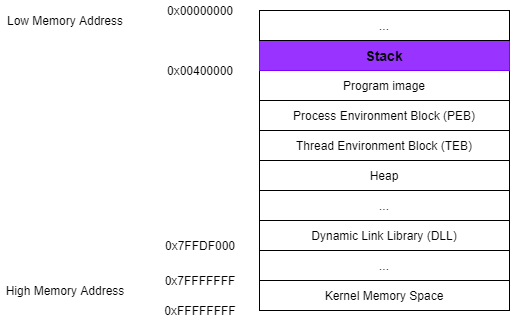
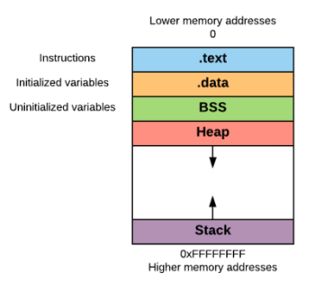

Process Memory
In Windows when a process is running, it executes code from within the
Program Image or from various
Dynamic Link Libraries (DLLs). The
Stack is a short-term data area that the process requires for its functions, local variables, and program control information. To facilitate independent execution of multiple threads, each threads in a running process has its own
Stack.
When a process runs, in memory it is organized in four regions:
Text,
Data,
Heap and
Stack •
Text region: or instruction segment, is fixed by the program and contains the program code (instructions). This region is marked as read-only since the program should not change during
execution.
•
Data region: is divided into initialized data and uninitialized data.
◇
.data → Initialized data includes items such as static and global declared variables that are pre-defined and can be modified.
◇
Block Started by Symbol (BSS) → uninitialized data, can have variables that are initialized to zero or do not have explicit initialization (ex. static int t).
•
Heap region: size of the
Data region can be extended in the
Heap region with the use of system calls
brk and
sbrk(
http://man7.org/linux/man-pages/man2/brk.2.html).
These system calls are used by
malloc,
realloc and
free functions
•
Stack region: is like an array used for saving a function’s return addresses, passing function arguments, and storing local variables.
{kind=link}